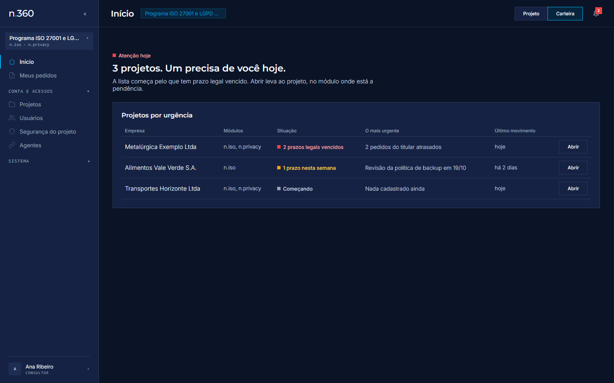
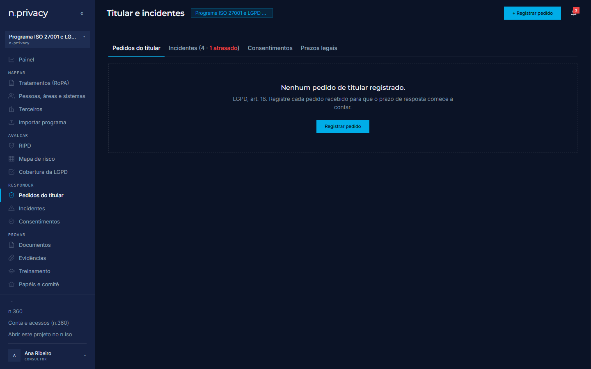
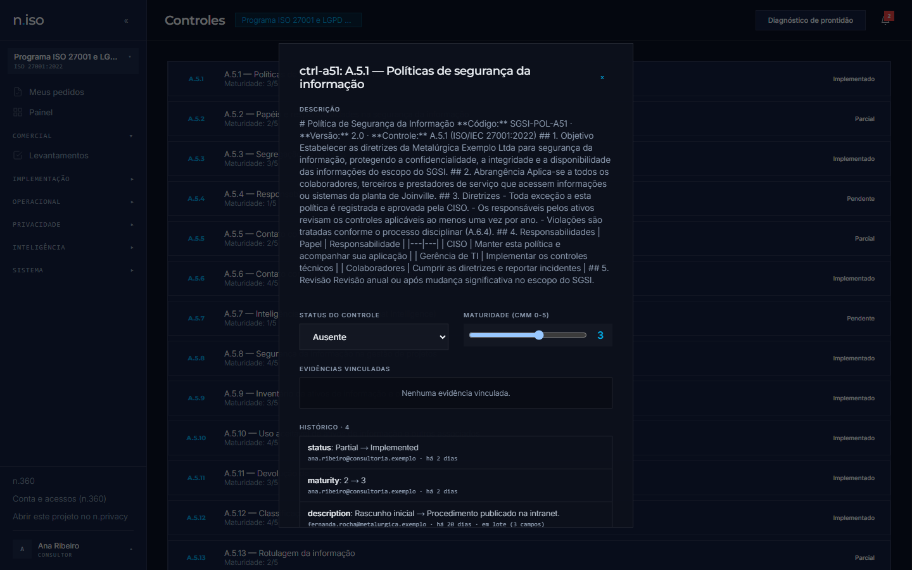
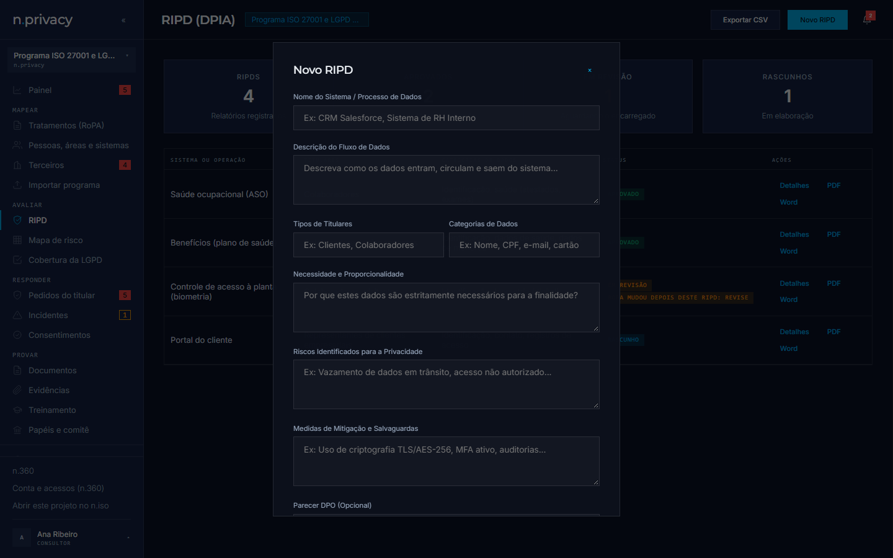
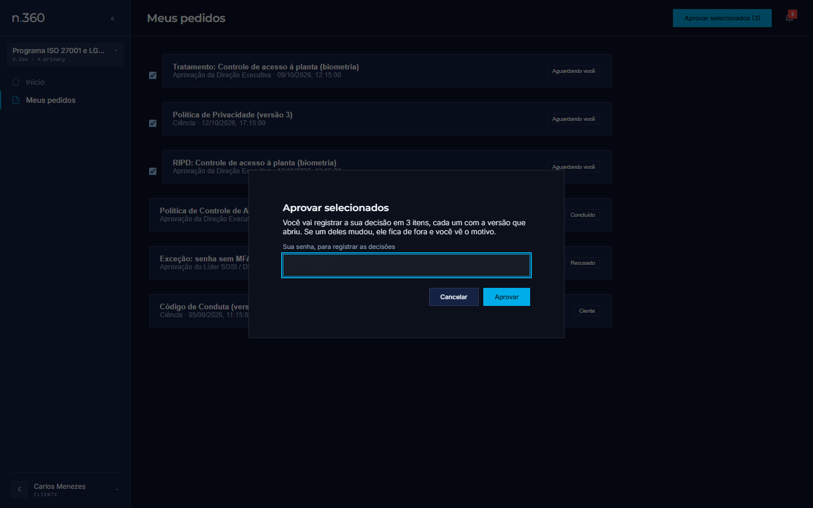
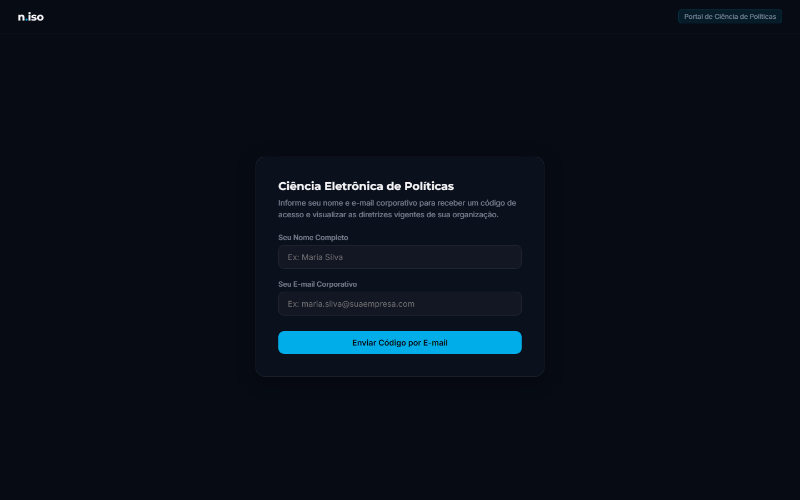

<title>Análise do n.360</title>
<link rel="preconnect" href="https://fonts.googleapis.com"><link rel="preconnect" href="https://fonts.gstatic.com" crossorigin>
<link href="https://fonts.googleapis.com/css2?family=Inter:wght@400;500&family=JetBrains+Mono:wght@500&family=Montserrat:wght@500;600&display=swap" rel="stylesheet">
<style>
:root{
  --bg:#f4f6fa; --surface:#ffffff; --surface-2:#e9eef6; --border:#cbd5e1;
  --text:#0b1326; --text-2:#334155; --text-dim:#475569;
  --accent:#006f99; --dot:#00ade8; --warn:#8a5a00; --bad:#b42318; --ok:#116b3a;
  --font-body:Inter,system-ui,sans-serif; --font-head:Montserrat,Inter,sans-serif; --font-mono:"JetBrains Mono",ui-monospace,monospace;
}
@media (prefers-color-scheme:dark){:root:not([data-theme="light"]){
  --bg:#0b1326; --surface:#162244; --surface-2:#1e2d52; --border:rgba(255,255,255,.14);
  --text:#f1f5f9; --text-2:#cbd5e1; --text-dim:#94a3b8; --accent:#00ade8; --warn:#fbbf24; --bad:#f87171; --ok:#4ade80; color-scheme:dark}}
:root[data-theme="dark"]{
  --bg:#0b1326; --surface:#162244; --surface-2:#1e2d52; --border:rgba(255,255,255,.14);
  --text:#f1f5f9; --text-2:#cbd5e1; --text-dim:#94a3b8; --accent:#00ade8; --warn:#fbbf24; --bad:#f87171; --ok:#4ade80; color-scheme:dark}
*{box-sizing:border-box}
body{background:var(--bg);color:var(--text);font:400 15px/1.55 var(--font-body);padding-inline:max(16px,4vw)}
main{max-width:1080px;margin:0 auto;padding-block:32px 72px;display:flex;flex-direction:column;gap:44px}
h1,h2,h3{font-family:var(--font-head);font-weight:600;text-wrap:balance;margin:0}
h1{font-size:clamp(28px,4vw,38px);line-height:1.15}
h2{font-size:22px;line-height:1.25;padding-top:10px;border-top:1px solid var(--border)}
h3{font-size:17px;font-weight:500}
p{margin:0;max-width:72ch}
.marca{font-family:var(--font-head);font-weight:500;letter-spacing:-.01em}
.marca b{color:var(--dot);font-weight:500}
.lede{font-size:17px;color:var(--text-2)}
.meta{font:500 12px var(--font-mono);letter-spacing:.06em;text-transform:uppercase;color:var(--text-dim)}
section{display:flex;flex-direction:column;gap:16px;min-width:0}
.tabela{overflow-x:auto;border:1px solid var(--border);background:var(--surface)}
table{border-collapse:collapse;width:100%;min-width:620px;font-size:14px}
th,td{text-align:left;vertical-align:top;padding:9px 12px;border-bottom:1px solid var(--border)}
th{font:500 12px var(--font-mono);letter-spacing:.05em;text-transform:uppercase;color:var(--text-dim);background:var(--surface-2)}
td.n{font-variant-numeric:tabular-nums;font-family:var(--font-mono);white-space:nowrap}
tr:last-child td{border-bottom:0}
.tag{display:inline-block;font:500 11px var(--font-mono);letter-spacing:.05em;padding:2px 6px;border:1px solid currentColor;margin-right:8px;white-space:nowrap}
.p0{color:var(--bad)} .p1{color:var(--warn)} .p2{color:var(--accent)} .ok{color:var(--ok)}
.problema{border:1px solid var(--border);background:var(--surface);padding:14px 18px;display:flex;flex-direction:column;gap:6px}
.problema.grave{border-left:4px solid var(--bad)}
.problema.alto{border-left:4px solid var(--warn)}
.problema h3{font-size:16px}
.problema p{color:var(--text-2)}
.onde{font:500 12px var(--font-mono);color:var(--text-dim);overflow-wrap:anywhere}
.imgs{display:grid;grid-template-columns:repeat(auto-fit,minmax(300px,1fr));gap:12px}
figure{margin:0;border:1px solid var(--border);background:var(--surface);display:flex;flex-direction:column;min-width:0}
figure img{display:block;width:100%;height:auto}
figcaption{padding:8px 12px;font-size:13px;color:var(--text-dim)}
ul,ol{margin:0;padding-left:20px;display:flex;flex-direction:column;gap:6px;max-width:76ch}
code{font:500 13px var(--font-mono);background:var(--surface-2);padding:1px 5px}
.onda{border:1px solid var(--border);background:var(--surface);padding:16px 18px;display:flex;flex-direction:column;gap:8px}
.grid2{display:grid;grid-template-columns:repeat(auto-fit,minmax(300px,1fr));gap:12px}
</style>

<main>
  <header style="display:flex;flex-direction:column;gap:12px">
    <span class="meta">Estudo de design · 15/10/2026 · método Impeccable · nada foi alterado ainda</span>
    <h1>Análise do <span class="marca">n<b>.</b>360</span>: marca, clareza e próximos passos</h1>
    <p class="lede">Avaliei a aplicação inteira para responder a uma pergunta: a pessoa entende, em cada tela, o que fazer a seguir? Junto, conferi a adequação à marca da ness. e a qualidade da interface. Abaixo, o diagnóstico, o que já funciona, o que corrigir primeiro e um plano em quatro ondas.</p>
    <p style="color:var(--text-dim);font-size:14px">Como foi feito: 537 capturas de todas as telas, com dados fictícios e a API simulada, para cada papel (consultor, cliente, administrador, comercial, quem chega por link). Quatro revisores de design trabalharam isolados, um por área, mais uma avaliação mecânica (detector do impeccable e conferência da marca). Referência de produto: o PRODUCT.md novo (#416).</p>
  </header>

  <section aria-labelledby="s1">
    <h2 id="s1">Em uma frase</h2>
    <p>O <strong>Painel de entrada</strong> é a melhor tela do produto: diz o que fazer agora, por prazo, com o motivo em texto. Quase todo o resto é uma tela genérica de GRC (cartões de números, tabela, selos). Além disso, fala três dialetos: português claro, inglês vindo do banco e português sem acento. Os riscos mais sérios não são estéticos: <strong>erro que aparece como "nenhum registro"</strong>, <strong>selos de "Conforme" que o sistema não consegue comprovar</strong> e <strong>cliente que não consegue agir</strong> onde deveria.</p>
  </section>

  <section aria-labelledby="s2">
    <h2 id="s2">Nota por área</h2>
    <p>Escala Nielsen de 0 a 40. Interfaces reais costumam ficar entre 20 e 32. Abaixo de 20 a experiência atrapalha o trabalho.</p>
    <div class="tabela"><table>
      <thead><tr><th>Área</th><th>Nota</th><th>O que pesa</th></tr></thead>
      <tbody>
        <tr><td>Início do n.360 e Conta e acessos</td><td class="n">20/40</td><td>Início autoral; a administração vira tela genérica; a aprovação em lote não mostra o que vai ser assinado</td></tr>
        <tr><td>n.iso</td><td class="n">19/40</td><td>Erro aparece como lista vazia; selos de "Conforme" sem base; o cliente cai numa jornada de 41 fases</td></tr>
        <tr><td>n.privacy</td><td class="n">20/40</td><td>O cliente não registra nem responde pedido do titular; a atividade, o RIPD, os riscos e a aprovação não formam um fluxo</td></tr>
        <tr><td>Páginas públicas e e-mails</td><td class="n">23/36</td><td>A proposta é exemplar; os e-mails não têm marca nem dizem quem pede; cada página tem um visual diferente</td></tr>
      </tbody>
    </table></div>
    <div class="tabela"><table>
      <thead><tr><th>Heurística</th><th>Nota consolidada</th><th>Achado que mais pesa</th></tr></thead>
      <tbody>
        <tr><td>1. Visibilidade do estado</td><td class="n">2</td><td>Números que não batem entre telas (Painel 18 riscos, Riscos 12, Monitor 0)</td></tr>
        <tr><td>2. Linguagem do usuário</td><td class="n">2</td><td>Implemented, AT RISK, Tenant, OTP, DPIA ao lado de RIPD, "Líder SGSI" dentro do n.privacy</td></tr>
        <tr><td>3. Controle e liberdade</td><td class="n">2</td><td>Modais sem botão de fechar; Esc descarta texto digitado sem perguntar</td></tr>
        <tr><td>4. Consistência</td><td class="n">1</td><td>Sete tabelas diferentes, seis famílias de selo, quatro jeitos de fechar modal, rótulo do menu diferente do título da tela</td></tr>
        <tr><td>5. Prevenção de erro</td><td class="n">2</td><td>Controle Implementado aparece como "Ausente" e salvar grava a regressão</td></tr>
        <tr><td>6. Reconhecer em vez de lembrar</td><td class="n">2</td><td>Riscos, ações e LIA da atividade escondidos num modal chamado "Ligações"</td></tr>
        <tr><td>7. Eficiência</td><td class="n">2</td><td>Listas sem ordenar por prazo nem filtrar; o RoPA não tem busca</td></tr>
        <tr><td>8. Estética e minimalismo</td><td class="n">2</td><td>Paredes de botões (seis primários no painel do projeto, cinco ações por linha)</td></tr>
        <tr><td>9. Recuperação de erro</td><td class="n">1</td><td>Falha de carga vira "nenhum registro" e convida a cadastrar de novo</td></tr>
        <tr><td>10. Ajuda</td><td class="n">3</td><td>"Por que perguntamos", "Como esta frase é montada", prazos legais com fonte</td></tr>
        <tr><td><strong>Total</strong></td><td class="n"><strong>19/40</strong></td><td>Precisa de atenção, com um ponto forte claro para copiar</td></tr>
      </tbody>
    </table></div>
  </section>

  <section aria-labelledby="s3">
    <h2 id="s3">O que já funciona e deve ser o molde</h2>
    <ul>
      <li><strong>O Painel de entrada.</strong> Uma frase de estado por papel, "o que fazer agora" ordenado por prazo legal, o motivo escrito e a regra explicada em "Como esta frase é montada". É a resposta ao seu pedido; falta levar esse padrão ao resto.</li>
      <li><strong>A entrevista do RoPA.</strong> "Por que perguntamos", a guarda do art. 11 e o copiloto que propõe sem decidir. Fala a língua do encarregado.</li>
      <li><strong>A proposta comercial pública.</strong> Documento de contrato claro, os três números no topo, aceite com cargo. É a única página responsiva e o modelo para as outras páginas públicas.</li>
    </ul>
    <figure><figcaption>O Início: a frase de estado e a fila por prazo. É o padrão a levar às outras telas.</figcaption></figure>
  </section>

  <section aria-labelledby="s4">
    <h2 id="s4">O que corrigir primeiro</h2>

    <div class="problema grave"><h3><span class="tag p0">P0</span>Erro de carga aparece como "nenhum registro"</h3>
      <p>Quando a API falha, Riscos, Ativos, Evidências, RoPA, Terceiros e Pedidos do titular mostram o estado vazio com o botão "Registrar" ou "Novo". Num produto guiado por prazo legal, a pessoa pensa que não há pedido pendente, ou cadastra em duplicata. O Painel com erro não oferece "Tentar de novo".</p>
      <p><strong>Correção:</strong> um único componente de erro, com "Tentar de novo", em toda lista; proibir o <code>catch</code> silencioso nas telas.</p>
      <span class="onde">grc.js:29 · monitor.js · compliance.js · privacy.js · titular.js · terceiros.js · painel.js:282,288,317</span></div>

    <div class="problema grave"><h3><span class="tag p0">P0</span>Duas telas gravam ou mostram dado errado</h3>
      <p>"Novo RIPD" nunca mostra o seletor de atividade: o RIPD nasce sem herdar nada do RoPA, e o formulário sem nome fecha sem aviso. O detalhe do controle mostra "Ausente" num controle Implementado (o seletor não tem essa opção); salvar dali grava a regressão. O título mostra o id interno "ctrl-a51" e a descrição aparece em markdown cru.</p>
      <span class="onde">privacy.js:467,519 · compliance.js:113,124-127</span></div>

    <div class="problema grave"><h3><span class="tag p0">P0</span>O cliente não consegue agir onde deveria</h3>
      <p>No n.privacy, o administrador do cliente não registra nem responde pedido do titular nem incidente. Ele gera um rascunho de resposta, mas não tem onde gravá-lo. No n.iso, o cliente nunca vê o Painel: cai numa jornada de 41 fases com botões de operador ("Gerenciar Fases", "Migrar 27701"). A visão "Esperando a sua decisão" já existe e não é usada ali. Isso contraria o critério de sucesso "o cliente age sozinho".</p>
      <span class="onde">titular.js:21 · router.js:9-11 · globals.js:923-929 · painel.js:179</span></div>

    <div class="problema grave"><h3><span class="tag p0">P0</span>Aprovação em lote sem mostrar o que vai ser assinado</h3>
      <p>O modal pede a senha para "3 itens" sem listá-los e chama de "Aprovar" um lote que inclui ciência. A caixa fica desabilitada até a pessoa abrir o pedido, e o motivo só aparece ao passar o mouse. O resultado diz "abra de novo" sem link para o item que ficou de fora.</p>
      <span class="onde">aprovacao-lote.js:47-93 · meus-pedidos.js:61</span></div>

    <div class="problema grave"><h3><span class="tag p0">P0</span>E-mails sem marca, sem dizer quem pede, com cara de phishing</h3>
      <p>Todos saem como "n.iso", e o de ciência diz "Pedimos a sua ciência" sem dizer quem pede. Os de código têm uma linha só, e o da homologação não tem botão e mostra a data em formato técnico. O botão branco sobre o azul da marca tem contraste de 2,6:1 (o mínimo é 4,5:1). São a porta de entrada de fornecedor, funcionário e aprovador.</p>
      <p><strong>Correção:</strong> um invólucro único de e-mail: marca, quem pede, o que fazer, até quando e um contato humano; remetente e resposta pela consultoria do projeto.</p>
      <span class="onde">helpers.ts:729 · pedidos.ts:324-331 · public.ts:86-91 · homologacoes.ts:60-62 · avisos-prazo.ts:366 · users.ts:195 · auth.ts:353</span></div>

    <div class="problema alto"><h3><span class="tag p1">P1</span>Selos de "Conforme" que o sistema não consegue comprovar</h3>
      <p>Alguns selos aparecem sem base que os sustente: "Conformidade Cl. 9.3: Conforme" basta existir uma análise crítica; "Maturidade 4.3: 100% CONFORME"; "ISO 27001 CONFORME" no selo da política; "Não conforme" no treinamento. Diante do auditor, isso arrisca a reputação da ness.</p>
      <span class="onde">monitor.js:1016,1434 · compliance.js:1910 · grc.js:842</span></div>

    <div class="problema alto"><h3><span class="tag p1">P1</span>A atividade de tratamento não é um fluxo</h3>
      <p>Atividade, teste de impacto, RIPD ou LIA, riscos e ações, aprovação: são telas soltas. O teste de impacto e o ciclo de vida só aparecem depois de gravar a atividade. Riscos e ações ficam no 3º e 4º bloco de um modal de 11 seções. A aprovação aparece em três lugares, um deles pedindo a assinatura do "Líder SGSI". O teste de impacto pergunta de novo 5 das 13 respostas que a entrevista já tem. Isso contraria o princípio "nunca perguntar duas vezes".</p>
      <span class="onde">ropa-entrevista.js:215,252 · tratamento-ligacoes.js · src/services/impacto.ts</span></div>

    <div class="problema alto"><h3><span class="tag p1">P1</span>Três dialetos e jargão de sistema</h3>
      <p>Status em inglês vindo do banco (Implemented, Missing, AT RISK, EXPIRED, WON, Under Review), 45 trechos sem acento (Evidencia, Politica, Acao, "sensiveis") e jargão de sistema (Tenant, "Papel (Role)", OTP, SHA-256 para o CEO, códigos como <code>MFA.VERIFY</code>). Dentro do n.privacy ainda aparece vocabulário de ISO ("Meta ISO 27001", DPIA ao lado de RIPD). Erros técnicos chegam ao usuário em 111 avisos, alguns com o caminho da API.</p>
      <span class="onde">grc.js · monitor.js · project.js:226,324 · compliance.js · api.js:34-74</span></div>

    <div class="problema alto"><h3><span class="tag p1">P1</span>Cada tela inventa seus componentes</h3>
      <p>Sete implementações de tabela, seis famílias de selo, 170 textos diferentes de estado vazio, 1.872 estilos inline e 407 cores fora dos tokens. Há quatro jeitos de fechar um modal, e alguns modais não fecham. Datas aparecem em formato técnico e em dd/mm na mesma janela. Em seis telas, o rótulo do menu é diferente do título da página.</p></div>

    <div class="problema alto"><h3><span class="tag p1">P1</span>Hierarquia de ação invertida e contexto espalhado</h3>
      <p>No Início do cliente, "Abrir o n.x" é o botão primário e "Ler e aprovar" é secundário. O painel do projeto tem seis botões primários; a carteira, nenhum. O projeto ativo aparece em quatro lugares (cinco para o administrador), alguns truncados ("Progr…").</p>
      <span class="onde">painel.js:108,117,135,219 · globals.js:751-771</span></div>

    <div class="problema alto"><h3><span class="tag p1">P1</span>Páginas públicas com quatro aparências</h3>
      <p>A página de leitura de política ainda usa o visual antigo da marca: outro fundo, blur, cantos arredondados e o nome n.iso. Erra também no texto ("Digitamos o código OTP") e pede o e-mail sem dizer de qual empresa. O portal do auditor e a homologação não mostram a marca nem no título da aba.</p>
      <span class="onde">politicas.html · politicas.js:241,275 · auditor.html · homologacao.html</span></div>

    <div class="imgs">
      <figure><figcaption>A API falhou, mas a tela diz "Nenhum pedido registrado" e convida a registrar.</figcaption></figure>
      <figure><figcaption>O controle está Implementado (veja o histórico), mas o seletor mostra "Ausente". Note também o id interno e o markdown cru.</figcaption></figure>
      <figure><figcaption>"Novo RIPD" sem o seletor de atividade: o RIPD nasce sem herdar nada.</figcaption></figure>
      <figure><figcaption>A senha é pedida para "3 itens", sem dizer quais.</figcaption></figure>
      <figure><figcaption>A página de leitura de política, ainda com o visual antigo.</figcaption></figure>
    </div>
  </section>

  <section aria-labelledby="s5">
    <h2 id="s5">Lacunas do legado: estão claras para quem usa?</h2>
    <p>As funções existem e estão em produção. A pergunta aqui é se a pessoa as encontra e entende o próximo passo.</p>
    <div class="tabela"><table>
      <thead><tr><th>Função</th><th>Encontra?</th><th>Próximo passo claro?</th><th>Herda o já informado?</th><th>O que corrigir</th></tr></thead>
      <tbody>
        <tr><td>Teste de impacto e Novo RIPD</td><td class="p0">Difícil</td><td class="p0">Não</td><td class="p0">Não</td><td>Mostrar o teste na atividade nova; corrigir o seletor do Novo RIPD; aproveitar as 5 respostas que a entrevista já tem</td></tr>
        <tr><td>Riscos e ações por atividade, mapa de risco</td><td class="p1">Mapa sim; riscos escondidos</td><td class="p1">Em parte</td><td class="ok">Sim (sistema e responsável)</td><td>Tirar do modal "Ligações" e pôr como etapa visível da atividade</td></tr>
        <tr><td>Ciclo de vida e bases legais (GDPR)</td><td class="p1">Só ao reabrir</td><td class="p1">Em parte</td><td class="ok">Sim</td><td>Disponível na primeira passagem da entrevista</td></tr>
        <tr><td>Faixas de prazo, CSV e Word</td><td class="p1">Faixas abaixo da dobra; Word da LIA enterrado</td><td class="ok">Sim</td><td class="ok">Sim</td><td>Faixas no topo do painel; "Baixar Word" visível na LIA</td></tr>
        <tr><td>Homologação de fornecedor</td><td class="p1">Só dentro do terceiro</td><td class="p1">"Homologar" gera link, não homologa</td><td class="ok">Sim</td><td>Renomear o botão; "Concluir" sem resultado pré-marcado; e-mail com marca</td></tr>
        <tr><td>Importação do legado</td><td class="p1">Modelos de CSV só no runbook</td><td class="p1">Em parte</td><td class="ok">Sim</td><td>Link para os modelos na tela; números da reconciliação abrem os itens; não oferecer "Aceitar" em item "Já existe"</td></tr>
      </tbody>
    </table></div>
  </section>

  <section aria-labelledby="s6">
    <h2 id="s6">Marca ness.</h2>
    <div class="grid2">
      <div class="onda"><h3 class="ok">Certo</h3><ul>
        <li>Marca sempre em minúsculas, com o ponto no azul da marca no app; nenhum "Ness" ou "NESS"</li>
        <li>Tokens únicos, geometria quadrada, sem gradiente nem blur no app</li>
        <li>Nenhum itálico, nenhum emoji; favicon BlueDot nas cinco páginas</li>
        <li>Contraste dos textos principais acima de 4,5:1</li></ul></div>
      <div class="onda"><h3 class="p0">Desvios</h3><ul>
        <li>E-mails sem marca e com o botão reprovado em contraste</li>
        <li>Fonte JetBrains Mono declarada, usada 30 vezes, mas nunca carregada</li>
        <li>Página de política no visual antigo; auditor e homologação sem marca; títulos de aba com "n.iso"</li>
        <li>Vermelho de perigo como texto a 4,1:1; texto de 9px na barra lateral</li>
        <li>Azul da marca como fundo de área (aba SWOT, botões por linha) e como cor de estado ("Médio" no mapa)</li>
        <li>Cantos arredondados inline (51) e Montserrat 700 fora do padrão</li></ul></div>
    </div>
    <p style="color:var(--text-dim);font-size:14px">Conflitos entre o guia genérico da ness. e as decisões já tomadas no produto: tema claro e escuro, sombras e glow, cantos arredondados, alvos de toque de 44px e PWA. Valem as decisões do produto (tema escuro único, quadrado, sem blur, sem responsividade por ora). Não são defeitos.</p>
  </section>

  <section aria-labelledby="s7">
    <h2 id="s7">Plano em quatro ondas</h2>
    <div class="onda"><h3><span class="tag p0">Onda 1</span>Confiança</h3><p>Erro nunca vira vazio (componente único com "Tentar de novo"). Corrigir o Novo RIPD e o status do controle. O cliente age: registra e responde pedido do titular e incidente, e vê "Esperando a sua decisão" no n.iso. O lote mostra o que vai ser assinado. Os selos de "Conforme" sem base passam a dizer o que de fato existe ("análise crítica registrada em …"). E-mails com invólucro de marca.</p></div>
    <div class="onda"><h3><span class="tag p1">Onda 2</span>Um fluxo por objetivo</h3><p>A atividade de tratamento como fluxo com etapas visíveis (entrevista, teste de impacto, RIPD ou LIA, riscos e ações, aprovação), sem perguntar de novo e com uma aprovação só. No n.iso, uma resposta para "estou pronto para o estágio 1?", juntando Jornada, Monitor e Certificação. Uma ação primária por tela. O contexto do projeto num lugar só.</p></div>
    <div class="onda"><h3><span class="tag p2">Onda 3</span>Uma língua e um sistema</h3><p>Status e termos traduzidos na camada de exibição, acentos corrigidos, rótulo do menu igual ao título da tela. Componentes únicos: modal com fechar, foco e Esc que pergunta antes de descartar; tabela, selo, estado vazio, erro e datas em dd/mm. Migrar os estilos inline das quatro telas grandes. Carregar a fonte JetBrains Mono, ajustar a escala tipográfica e o contraste do vermelho.</p></div>
    <div class="onda"><h3><span class="tag p2">Onda 4</span>A vitrine externa</h3><p>Uma folha de estilo comum para as quatro páginas públicas, com a página de política refeita na marca. Títulos com a marca, contato de quem pede e o que acontece depois. Na homologação, mostrar o que ficou sem resposta antes de enviar.</p></div>
    <p>Cada onda vira PR próprio, com testes e verificação em produção. A Onda 1 é a que mais protege o cliente e a ness.; as outras podem ser reordenadas.</p>
  </section>

  <section aria-labelledby="s8">
    <h2 id="s8">Ressalvas</h2>
    <ul>
      <li>As capturas usam dados fictícios e a API simulada. Algumas divergências de números entre telas (cobertura da LGPD, contagem de riscos) podem vir da simulação; conferir com dados reais antes de corrigir.</li>
      <li>As capturas de página inteira saíram do tamanho da janela; o que fica abaixo da dobra foi avaliado pelo código.</li>
      <li>O que é decisão jurídica (textos do teste de impacto, perguntas da homologação) não é mudado por este estudo.</li>
      <li>Os relatórios completos de cada área e da avaliação mecânica vão para o repositório em <code>docs/design/diagnostico-2026-10-15/</code>.</li>
    </ul>
  </section>
</main>
